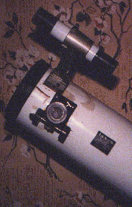
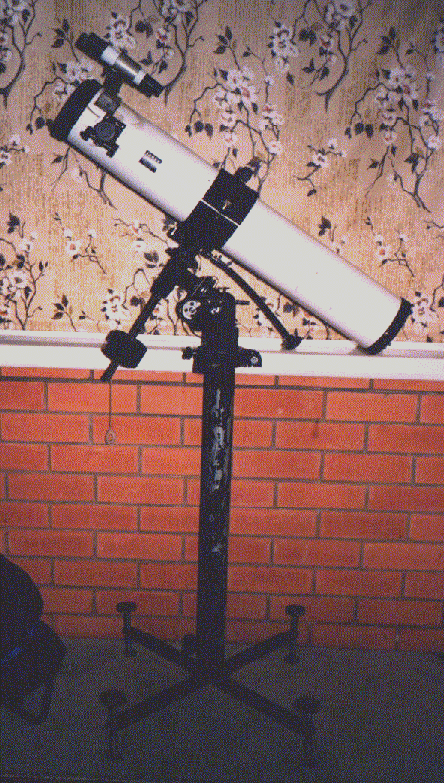

In a momentary lapse in 1983 I bought a 60mm refractor for $60 at K-Mart. It was okay for viewing the Moon but not much else, although I did first see the rings of Saturn through that scope. In 1984 I bought the Tasco. I had been interested in astronomy since buying Hamlyn's "Encyclopedia of Astronomy" and seeing Carl Sagan's "Cosmos" series, but I knew very little about telescopes. The 11T seemed okay to me and wouldn't break the bank at $400. What I didn't realise was that the finderscope was next to useless, the Huygens eyepieces and 2x Barlow were cheap resulting in poor contrast and chromatic aberration, and the tripod was not very stable.
Although I was a financial member of ASSA at the time I didn't attend meetings, but I did take an adult education astronomy course (lectured by Mike O'Leary as I recall) in 1986. I persevered with the 11T and still enjoyed better views of the planets and double stars than I'd seen with the 60mm, but had no real success with deep sky objects except brighter ones like Omega Centauri.
In 1987 I moved to Tasmania, and a few days after my arrival SN1987a burst onto the scene. I joined the AST and soon started learning a great deal from members at observing nights. I'll always recall the thrill I had from seeing M42 through one of Martin Harvey's 0.965" Orthoscopic eyepieces in my 11T. It was like a different scope. I recall him saying at the time that "the eyepiece is literally half the telescope". Fortunately, the primary and secondary mirrors in the 11T are quite good.
I eventually bought four Orthoscopics: 18mm, 12mm, 9mm, and 6mm (around $280 in total) and later, a good second hand 25mm Kellner from someone in the AST for $10! I use the 9mm and 6mm Orthos primarily for planetary and lunar observing. In particular, I used them in the early 90s for Jovian satellite eclipse timings which, along with many others' worldwide, were sent to JPL for use during the Galileo mission.
The next thing to be replaced was the finderscope. I bought a $70 6x30 with a solid mount that matched the original finder's holes, making it much easier to locate deep sky objects. Not long after purchasing this, I was helping out at a public astronomy night at Canopus Hill (home to a 40" reflector used by the University of Tasmania, near Hobart). It was a very windy night, my scope was on uneven ground, I left it for a short time and during my absence, the whole scope tipped over, falling onto the finder, breaking one of its cross hairs and denting the tube around the area of the finder's mount.
With mirrors removed my wife and I "panel beated" the tube. I replaced the broken cross hair by drilling a tiny hole through the finder and inserting a thin strand of copper wire. You wouldn't notice this when looking through the finder now, but the tube still bears the scars. Despite this punishment, views through the scope were not reduced in quality. This accident prompted me to design a simple pier mount with four height adjustable feet, still using the original German Equatorial head. A small engineering firm in Launceston built this for me from scrap metal for $50! Apart from vastly increased stability, the whole structure damps down much more quickly than the lightweight wooden tripod, the tube doesn't snare on any of the legs, and when polar aligned I get about another four hours of RA than with the wooden tripod, again because the legs don't get in the way.
Later, I was at an AST members observing night and the declination axis mechanism died. To their credit, Tasco honoured a lifetime guarantee and replaced this for free which is especially amazing given that I'd had the scope for more than seven years by that time!
The next purchase was a $300 clock drive, not from Tasco, although they do sell one. This made observing so much more enjoyable, public nights easier, and long exposure astrophotography feasible. The addition of a ball and gimbal mounted through the tube assisted camera piggybacking and I imaged comet Hyakutake using this (see comet pictures).
On a trip to Melbourne in 1995 I bought a Celestron 2x Barlow (~$90) and 3 filters (~$100). Upon my return to Adelaide in 1997 I had a much improved telescope and was more savvy about the practicalities of using an amateur telescope. The 11T has given me great views of the planets - including the impact sites of comet SL9, and reasonable views of many deep sky objects. I've even managed to use the 11T's small setting circles to "dial up" objects such as M1 with sufficient care in polar alignment.
But the improvements don't end there. Last year I purchased a 1.25" (~$100) focuser, drilling the necessary extra holes in the tube, and have since acquired three Celestron Plossls (26mm, 10mm, 7.5mm) at about $110 each. I mostly use these now although I can still use the older 0.965" eyepieces. Interestingly, the hole under the original focuser was large enough to accomodate the larger focuser. Of course, some Tasco models come with a 1.25" focuser as standard now.
Anyone who's looked through my scope at the Heights or Stockport has been impressed with the views, especially of the planets. It's now worth about $1300 plus the original $400. Would I do all this again? Probably not. But if you do have one of these scopes, I hope I've shown that there are ways of improving it. The most important items to replace were the eyepieces and finderscope. You don't have to do everything I've described here to end up with a better telescope. Could I improve the scope further? Well, I could have the primary mirror re-aluminised and I could buy more expensive eyepieces. I'd eventually like a better scope, but for now I'll dream of that Meade LX200 or even a 10" Newtonian and make do with my trusty old Tasco 11T.
 |
 |